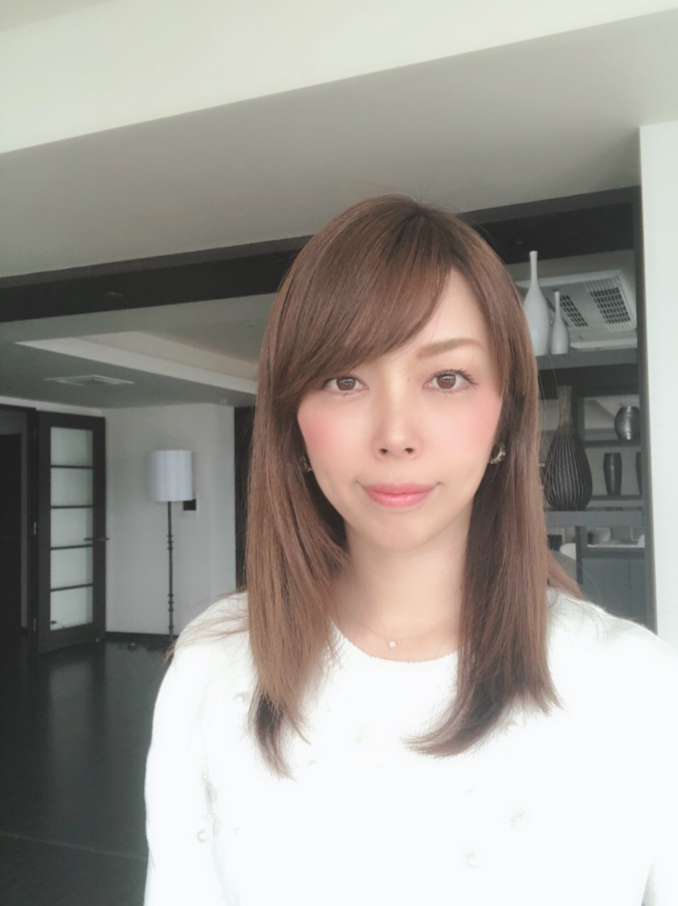
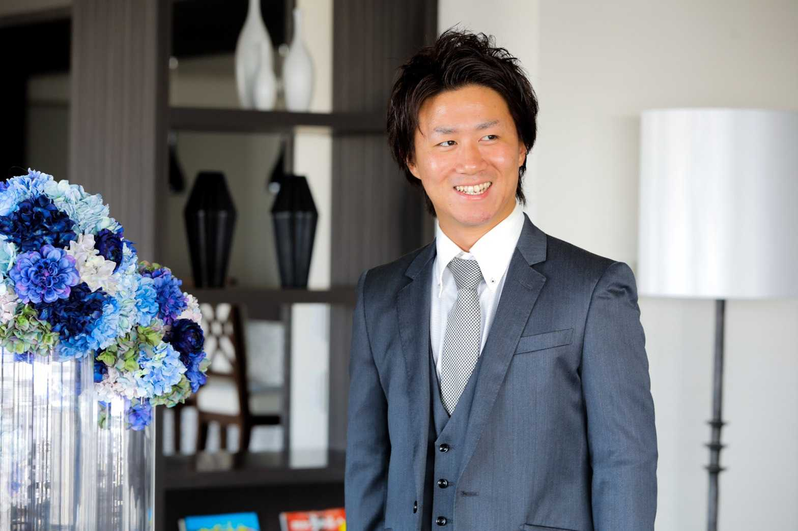
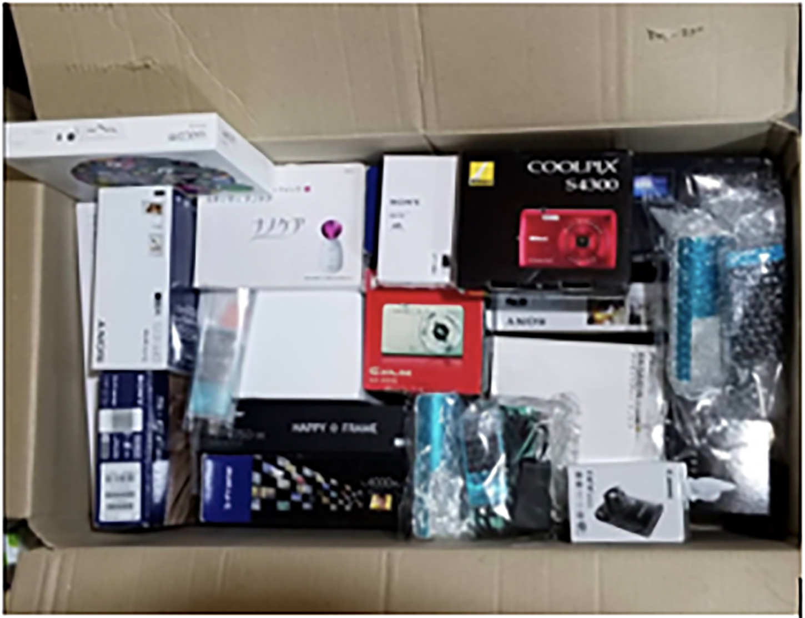
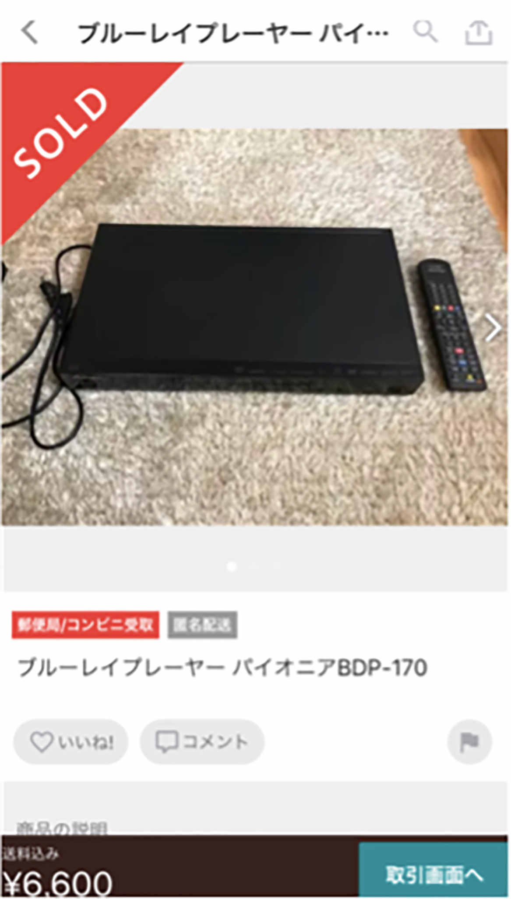
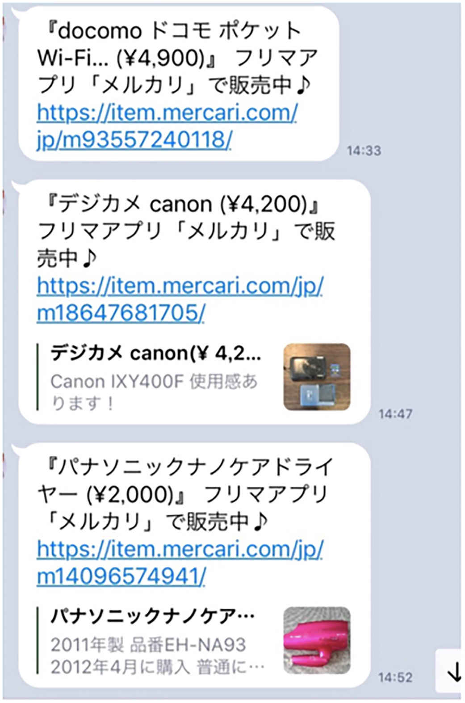
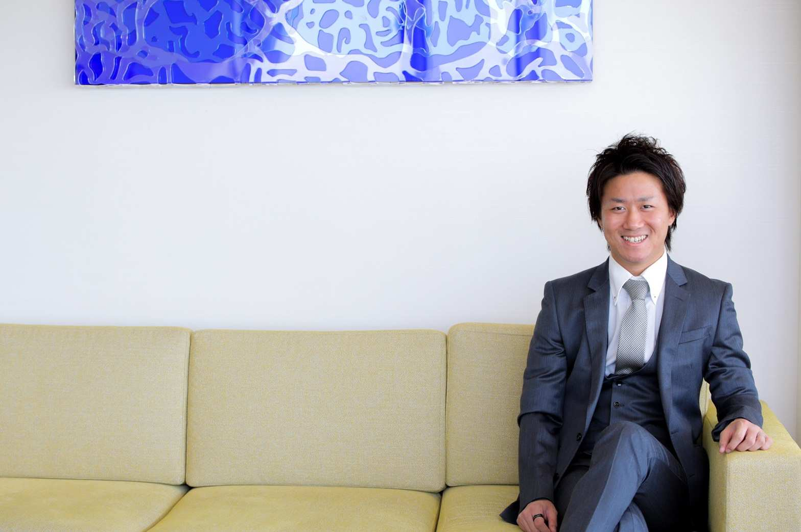

| 金持ちママ 貧乏ママ 〜シングルマザーが3ヶ月で月収148万円稼げた秘訣〜 | |
| 加藤純一 & あや | |
| Hitotsuku Publication (2019) | |
はじめまして。あやと申します。このたびは、私の本を手に取っていただき、本当にありがとうございます。とっても嬉しいです。
私は、もう一度人生をやり直したいと真剣に思っている人に、「それは、かならず実現するよ」と伝えたくて、この本を書きました。
私は現在38
歳のシングルマザーで、11
歳と９歳の娘を一人で育てています。こんなふうに聞くと、さぞかし大変なんだろうな......と思われるかもしれません。確かに、離婚したばかりの頃は、よく言われているようなシングルマザーの現実と変わりませんでした。自分に自信がなくて、子供を抱えて、お金もなくて、将来に不安だらけ......。
でも、そんな私が、ある１本の YouTube 動画に巡り会ったことで、毎月１００万円以上もお金を稼げるようになったんです！
「どうせ私の人生なんて、こんなもの」という諦めの境地から、精神的にも経済的にも豊かで満たされた人生を手に入れることができました。
そして、「私でもこんなに幸せになれたんだから、誰でも幸せになれるってことをどうしても伝えたい！」そんな思いに突き動かされて、この本を書いたのです。
自分の人生を諦めかけている人、もう頑張れないと感じている人、私と同じシングルマザーで将来に不安を抱えながら暮らしている人......「もう一度人生を本気でやり直したい！」と思っているなら、その願いは必ず叶います。だって、私にだってできたんですから！
この本では、経済的に成功して、心豊かな生活を送れるようになる方法を、私の実体験に基づいてすべて公開しています。
どうか、この本で、幸せな人生の再スタートを切ってください。私がどこまでもお手伝いします。


もう、どうしたらいいか分らない......というどん底から、私の人生をこんなに素晴らしいものに変えてくれたのは、加藤純一（かとうじゅんいち）さんという、私を教え導いてくれたとっても大切なメンター、人生の師です。加藤さんなしでは今の私を語れないので、加藤さんについてまずお伝えしますね。
加藤さんは、株式会社 With the luck 代表取締役。茨城県在住で、今年29
歳の若きビジネスリーダーです。
大学を１年で中退して、21
歳で結婚し、就職。転職を一度した後に、25
歳で会社員の仕組みに疑問を持ち、ブログビジネスを独学で始めました。４か月間、睡眠時間を１日３時間にまで削ってブログを書くも、収益０。そこで、コンサルティングを受けて26
歳の時、転売ビジネスを始めます。
転売ビジネス、情報発信ビジネスを始めて初月で30
万、２か月目で60
万、３か月目で月収１３０万を達成。平成29
年９月13
日に会社を設立しました。
現在はコミュニティ講師、転売ビジネス、情報発信ビジネスをメイン事業として活動しています。
そんな加藤さんが発信している１本の YouTube 動画との出会いが、私の人生を大きく変えたのです。どこでどうやって２人が巡り会ったのか、加藤さんとの対談でご紹介したいと思います。
加藤：こんにちは、加藤純一です。
あや：あやです。
加藤：僕は脱サラして、転売ビジネスと情報発信ビジネスを立ち上げ、コミュニティでビジネスのやり方も教えています。あやさんは僕の大事なパートナーなんですが、僕の YouTube を見て問い合わせをしてくれたのが出会いでした。
あや：そうですね。
加藤：それから一生懸命勉強して、何とビジネスを始めて３カ月で１４８万円を達成したとか。おめでとうございます！
あや：ありがとうございます！
加藤：どんな風に達成したのか、どんなことがツラかったのか、どんな環境だったからできたのか聞かせてください。まずは、自己紹介から。
あや：はい。私は現在38
歳のシングルマザーで、小学校６年生（11
歳）と３年生（９歳）の娘がいます。
加藤：３カ月前にネットビジネスを始めようと思ったきっかけは何だったんですか？
あや：時給９５０円のパートで生計を立てていたんですが、月に10
万も稼げなくて。養育費や国からの援助を受けながら生活していくのが嫌で、家でできる仕事を探していたんです。そんなときに、加藤さんの YouTube に出会ったんです。
加藤：最初は転売ビジネスに興味を持って、お問い合わせをくれたんですよね。
あや：そうです。
加藤：それで、ビジネスを始めるのであれば、しっかり人と関わりながら、教わりながらやっていきたいということで、僕のコミュニティに参加してくれたんでしたね。なぜ、転売に興味を持ったんですか？
あや：加藤さんの動画を見てすごくわかりやすかったのと、ヤフオクとか知っているものを使ってやるビジネスだったので、これなら自分にもできそうだなと感じたんです。
加藤：知っているから具体的なイメージがわいたんでしょうね。僕の動画もわかりやすかったんで、あやさんの中で、ピンと来たと。
あや：そうですね。
加藤：その後、情報発信ビジネスのほうで、１４８万円を達成したわけですね。
あや：はい、そうです。
加藤：転売ビジネスからなぜ情報発信ビジネスのほうをやろうと思ったんですか？
あや：自分の勝手な予測なんですけど、転売のほうだと、頑張っても30
万円いくかいかないかくらいかなと。実際にやってみて、転売でどれくらい稼げそうかが見えてきたんです。でも私は月１００万稼ぎたくてビジネスを始めたので、１００万稼げるビジネスを探して、情報発信ビジネスを知りました。
加藤：月１００万の最短ステップを踏みたかったと。
あや：そうです。
加藤：転売でも１００万以上稼いでいる人もいますけど、情報発信のほうが本気でやれば、自分の頑張りが反映されやすいビジネスモデルだということで飛び込まれたわけですね。
あや：はい。
加藤：実際に情報発信ビジネスをやってみて、自分の想像と比べてどうでしたか？
あや：最初はただ加藤さんを信じてやるしかなかったので（笑）。早く実績を出したかったので、ひたすらやるのみでしたね。自分に自信がなかったので、実績を出さないと、精神的に続けられないだろうなと思っていました。
加藤：３カ月で結果が出なかったら、もう無理だろうと。
あや：そうです。自分には時間がないっていう意識がありました。情報発信って若い人たちがやってるなか、自分はもう若くないし。プライドもあって、とにかくひたすらやって、すぐに結果を出したかったんです。
加藤：情報発信ビジネスをやって、一番苦労したことってどんなことですか？
あや：タスクをこなすこと。ＳＮＳが結構苦手だったんです。
加藤：あんまりネットを使ってこなかったんですね。
あや：Facebook とか Twitter とか、わかるけど面倒くさいと。インスタなんて、やったこともなかったですね。
加藤：情報発信ビジネスって、自分の情報を YouTube、Facebook、Twitter、インスタとかを使ってどんどん「発信」していって、興味をもってくれた方からお問い合わせをいただくというビジネスですからね。
あや：そうなんです。
加藤：でも、ＳＮＳが苦手なあやさんが、３カ月で１５０万っていう結構すごい実績を出したわけですよね。達成できた理由は、自分のなかで何だと思いますか？
あや：周りの人たちのおかげですね。私に対して本気でアドバイスをくれたり、私のことを褒めてくれたり（笑）。一人だったら、絶対に達成できなかったと思います。周りの人の支えのおかげです！
加藤：環境も含め、周りの人に助けられたことが多かったんですね。それにしても、あやさんの相当な頑張りがなければ３カ月で１５０万は達成できなかったと思います。なんでそんなにがんばれたんですか？
あや：１人で子供２人を育てているので、子供にお金を残してあげたいし、今ここでやめちゃったら、安い時給のパートに逆戻りするしかない。家にいられなくなるのは嫌だったので、フルタイムで仕事をすることもできない。だったら、もうやるしかないじゃないですか。
加藤：なるほど。同じようにシングルマザーだったり、生活が苦しい人もいるわけですよね。いま苦しい状況にあって、お金を何とか稼ぎたいけど稼げていない、あるいはビジネスを始めることすらできていない人もいっぱいいると思うんですね。
あや：いると思います。
加藤：そういう人が一歩踏み出すために、あやさんが大事にしていることや、あやさんから何かアドバイスはありますか？
あや：やっぱり行動が大事です。私も行動を諦めてしまっていたら、今の私はいないと思います。たった一本のライン、電話で私みたいに人生が変われるってことを本当に伝えたいんです。私みたいな人をたくさん作っていきたいです。やってみたいと思ったら、真剣にそれに向き合うことが大事だと思います。
加藤：素晴らしいですね。やっぱり結果を出すまでってすごく苦しいと思うんです。あやさんもつらくて、僕の前で泣いてましたよね？
あや：泣いてましたね、始めて一カ月くらいのときに。めっちゃ悔しかったんです。
加藤：結果を出すことへの強い思いがあるのに、自分の理想と現実が合わない、本当は今こうなっていたはずなのに実際はそうなっていないとか、ビジネスをやっているといろんなことがありますよね。
あや：そうなんですよね。
加藤：でも、そういうことを乗り越えて今のあやさんがあるし、僕だってそういう経験を乗り越えてきているわけで、誰でも通る道ではあります。だからといって、行動しないとか諦めるとか、お金をかけずにいつまでも結果が出ないやり方を続けてしまうとか、そういうことをしてしまうと、苦しい時期が長く続いてしまうように思います。
あや：私もそう思います。
加藤：あとは、環境も大事ですよね。
あや：すごく大事だと思います。
加藤：僕も、成功している人からノウハウを教えてもらえたからこそ、自分も人に教えてあげることができているわけです。それが良い連鎖になっていって、稼げる人が稼げない人に教えるという輪がつながっていくのがとても大事だと思いますね。
あや：そうですね。ビジネスって一人では限界がありますよね。
加藤：苦しい時期を乗り越えて、人に教えられるくらいにまでなったときは、やってきて良かったと思うし、そのためには今としっかり向き合ってやっていくのが大切ですよね。
あや：そう思います。
加藤：あやさんは、今回だけで満足しないで......。
あや：しないです！ 全然、してないです（笑）。
加藤：全然してないですよね（笑）。
あや：してない！
加藤：その思いを持ち続けて、今度は一緒に頑張っていきたいと思っている人たちに教えていったり、仲間をどんどん作っていってほしいと思います。
あや：私がどうやって稼げるようになったのか、いろいろ聞いてみたいことがある方は、ぜひお問い合わせいただきたいと思います！
対談にもある通り、私はシングルマザーです。２人の娘と一緒に３人で暮しています。仕事では10
万も稼げない毎日で、毎日 YouTube を見ながら、家でできる仕事を必至に探していました。
本当はとても大変な時期だったんですけど、離婚するときに上の子が転校をスゴく嫌がっていたのもあって、子供に心配だけはさせまいと、いつも余裕のあるそぶりをしていました。離婚は親の都合なので、そのために子供に不安を感じさせたくないと気を張っていました。
金銭的にはまったく余裕がありませんでした。もしお金が十分あったら、娘２人にめいいっぱいおしゃれをさせてあげたいなとか、休みには旅行に連れていってあげたいなとか、土日は３人でお出かけできたらいいなぁと思っていましたけど、できなかったです。
子供に我慢をさせなければならないときは、母親として特にツラかったですね。欲しい物を買ってあげられないこともあったし、お友達と同じ習い事に行きたいと言われても、行かせてあげられなくて。お金があれば好きなことをさせてあげられるのに、と本当に思いました。
もしお金がないまま、このまま自分が病気になったり、死んじゃったりしたら？ と思うととても不安でした。
時給９５０円のパートをしながら、先が見えない日々を送る毎日。何とか今の状況から抜け出したくて、数あるネットビジネスの動画を片っ端から見ていきました。でも、なかなか具体的なイメージが持てるものがなくて。「ここに連絡してみよう」という勇気を持てる動画やビジネスが全然見つかりませんでした。
そうこうしているうちに、時間だけがむなしく過ぎていきます。生活費を稼ぐために仕事はしなくちゃいけないので、クラウドソーシングなどで在宅ワークにチャレンジしたりもしました。でも、それも長くは続かず。「家にいてできる仕事」という枠は外せなかったので、どうしても家でできることを見つけたかったんですが、なかなか希望に添う仕事が見つかりません。
そんなとき、本当にたまたまなんですが、加藤さんの動画に巡り会ったんです。何本もいろんな動画を見尽くしたあとに、やっと巡り会えた加藤さんの一本の動画。何か運命的なものを感じましたね。
加藤さんの話し方や伝え方には、とても惹かれました。動画を見て、内容がすべてストンと腑に落ちたんです。かなりの数の動画を見てきましたが、そんなのは初めてでした。「これだ！」とピンときて、すぐに連絡しちゃいました。
お金もかかることなので、自分に自己投資することに対する不安はありましたね。でも、やらないと稼げないということは動画でよくわかったし、稼がなくちゃいけないんだから、やるしかないでしょ！ これで稼ぐんだ！ と思い切ることができました。
「稼ぐぞ！」と意気込んで飛び込んではみたものの、実際にやってみると......想像以上に大変でした。利益を生み出すことの難しさを思い知りましたね。始めたばかりで「これは、キツいぞ......」と早くも挫折しそうになりました。
それでも頑張れたのは、やっぱり仲間がいたから。周りに同じように頑張っている人ばかりがいたので、自分も頑張れました。あとは、加藤さんの存在も大きかったですね。彼が「本気で頑張ろう！」という気持ちにし続けてくれました。「ツラいな、もうやめちゃおうかな」とか「もうこのくらいでいいんじゃない？」と甘えたくなってしまうときに、加藤さんが「そんなじゃだめだ！」とググッと持ち上げてくれて。加藤さんがいつもそばにいてサポートし続けてくれていなかったら、きっと私もどこかで挫折してたんじゃないかと思います。
当時は、コミュニティの誰よりも早く利益を出す、それだけをひたすら考えていました。仲間の中で、私が一番最初に成功してみせるぞ！ という気持ちでいっぱいでしたね。自分をあそこまで追い込めたのは人生で初めてかも。人間って、その気になればできるもんだなと思いますね。
結果を出すには、とにかくやるしかありません。それには、常にモチベーションを保っていないといけない。そこで、毎日のグループミーティングにはとにかく参加すると決めていました。具合が悪くても、用事があっても、何かあってもミーティングには参加する。そうして、自分のモチベーションを高く保つように頑張っていましたね。
それでも、やめたくなったことも一度や二度じゃありません。私のビジネスモデルは、コンサルタント業なんですね。お客様と話をしたり、悩みを聞いたりしていきつつ、信頼関係を築いていく。でも、一生懸命お話ししても、みんながみんな信頼してくれるわけじゃありません。連絡拒否されちゃったことも。私の思いがなかなか伝わらないときは、「もうツラいからやめちゃおう」と何度も思いました。
「やめようか」そう思ったときにいつも思い浮かんだのは、以前のお金がないときの生活でした。「ここでやめちゃったら、あの生活にまた逆戻りだ。ストレスだらけのパートの毎日がまた始まってしまう」。そう思うと、やっぱり頑張ろうと自分を奮い立たせることができたんです。
私って、メンタルが弱いんですよ。ちょっとうまくいかないと、すぐ弱音を吐いちゃう。ネガティブなことを言ったり、泣いちゃうこともありました。それでも、ここまで来れたのは、私のように真剣にやっている仲間がすぐそばにいたから。もう、これに尽きます。
加藤さんはいつもポジティブで、「僕だったらこう考えるけどなぁ、こうするけどなぁ」と強い心をいつも示してくれました。それで、どうすれば良いのかイメージできるような有益なアドバイスをたくさんもらいました。
周りに助けてくれる人がいれば、頑張れるし結果を出せます。自分の力だけで自分の価値観を壊すのって、とても難しいからです。人間って、自分が思っている以上に、自分で作った価値観にがんじがらめになってる。無意識に自分で自分を縛っちゃってるんですね。それを壊してあげられるのは、周りにいて真剣にアドバイスしてくれる人です。
コミュニティを立ち上げて、今度は自分が誰かを助けてあげる番だと思っています。私は、自分に本当に自信がなくて、ネガティブ思考のかたまりでした。でも、こんな私でも月に１００万円以上稼げるようになって、本当に自信がついたんです。私だってできたんだから、ほかの人にだってできるはず。心の底から、そう確信しています。それをとにかく伝えたい。今の生活を変えたいと真剣に思ってる人に、「私だってできたんだから、あなたにもできるよ」ととにかく伝えてあげたい。そのために、毎日頑張っています。
ツラくて泣いたことも。でも元の生活には戻りたくないと奮起して頑張りました。ただ頑張るだけじゃ稼げないから、どうやったら稼げるのか毎日一生懸命頭を使って考え続けましたね。今までやったことのないことをゼロからやったので、本当にツラかったんですね。押し売りをしない営業の仕方だったりとか、学んでも答えは一つではないことも多いので、実際にやるとやっぱり難しくて。これだけやれば簡単に利益が上がるなんてことは、ないんですよね。教えてもらったことを自分なりに考えて、工夫して試行錯誤しないといけない。必要だとわかっていても、それがツラかったです。
そんなときは、気持ちを奮い立たせるために、「引っ越し」をしました。貯金ばっかりしててもしょうがない。稼がなきゃ！ という気持ちになるためには、お金を使うことも必要なので、引っ越しをしてやる気を冷まさないようにしていました。気分も変わるのでおすすめですよ。
ビジネスが軌道に乗るまでは本当に大変でしたけど、家のお手伝いなんて全然してくれていなかった子供たちが、私が頑張ってるのを見て、進んでお手伝いしてくれるようになって。「ああ、私のことをちゃんと見てくれているんだな」と思うと、子供のためにももっと頑張ろうと思いました。
人生は、本当に気持ち次第で、いつでも変えられます。それを実感したのは、銀行口座を見たとき。これまで、私の銀行口座には１００万円以上入っていたことなんて一度もありませんでした。それが、ちゃんと口座に数字が書いてあるのを見て、「ああ、本当に私でも稼げたんだ」と実感しました。
電話一本で人生は変わります。同じような環境にいる人を、今度は私が手伝ってあげたい。「人生は変えられる」ことに気づくために必要なこと、それは「諦めずにやり続けること」だけです。
一人で悩んでいるシングルマザーの人がいるなら、「とりあえず今いる自分の環境を変えることが大事」とアドバイスします。「成功したければ、成功している人と一緒にいろ」って言いますよね？ 成功している人の話を聞くとか、成功している人のマネをするとか、成功している人のそばにいるとか、まずはそういう一歩を踏み出す。そうすることで、自分の価値観を壊して、成功者の価値観へ近づきましょう。思い切ってパートをやめて、ビジネス一本にするとか、踏み込む勇気が必要です。
「やってみたいけど、もう一歩踏み出せなくて...」という人は、考え方を変えましょう。人間は基本マイナス思考な人が多いけど、稼ごうと思ったらプラス思考じゃないと絶対無理です。思考が大切ですよ。凝り固まった思考を変えるには、コミュニティに入ったり、メンターを探すと良いと思います。
ここで、私のことをもう少し詳しくお話ししますね。ちょっと長いですが、読んでください。
私は埼玉出身。プライベートでいろいろありまして、埼玉から遠く離れた沖縄県石垣島に住むようになりました。２０１７年７月まで、向こうで結婚して10
年、トータル13
年間島暮らしをしていたんです。
それまで都会暮らしだったのが、いきなり田舎に行ったわけで、流行に流されない生活とか、移動時間がかからない生活とか、開放的でのんびりした島暮らしは、とても楽しかった。結婚してからも３〜５年くらいは、幸せでしたね。お金がなくてもそれなりに楽しく暮せていたし、２人の娘たちも可愛いし、お金なんてそんなになくても生きていけていたから、毎日何も考えずに暮らしてました。
でも、子供が成長していくにつれて、だんだん不安を感じるようになってきて。石垣島には高校が３つしかなくて、それも普通科と商業科と農業科だけ。もともと埼玉育ちの私としては、あまりに少ない選択肢に「こんなで子供の進路は大丈夫なの？」という心配がむくむく涌き起こってきたんです。島に住んでいる人にとっては当たり前でも、高校の選択肢が３つしかないなんて、私はかなり不安で、すごくギャップを感じていました。なので、「娘たちが高校に入るまでには、島を出たい！」と思うようになりました。
でも、当時は貯金ゼロ、夫とはすれ違いの生活。パートをやりながら、オンラインゲームに没頭する、つまらない毎日。そのうち、体に異変が起こり始めました。どうにも毎日からだがつらい、あちこちが痛い。島のお医者さんに診てもらっても、原因がわからなくて。症状が出たりでなかったりの繰り返しで、そのうち治るだろうみたいな感じでいたけれど、日に日に悪化してしまって、とても不安な気持ちで過ごしていました。
結局、５年がかりで出た診断は「膠原病」。ストレスが原因で起こるといわれている免疫系の病気です。わかったときは、まるでガン宣告を受けたかのように、かなりショックでした。子供もまだ小さいし、どうしよう......。でも、そんな私を夫はまったく心配してくれず、ついに愛想を尽かして離婚し、また埼玉に戻ったんです。
心機一転、親子３人でやり直そう！ と思っていたけど、これがなかなかうまくいかない。時給９５０円、月10
万円のパートじゃ、とても生活していけません。生活保護を受けようかというギリギリの毎日を送っていました。このままじゃいけない、娘のためにも何かしなきゃ、とにかくお金を稼ぎたい！ という思いにかられるようになっていきます。
できれば無料で何かを学びたい、家でできる仕事がしたいと思い、毎日 YouTube 三昧。そして、ついに、加藤さん動画に巡り会います。
転売ビジネスなんてまったく知らなかったので、ものすごく衝撃を受けました。あまりに衝撃を受けて、すぐに連絡してしまったくらい（笑）。人生ではじめて LINE@ に登録しました。「変わりたいならやるしかない！」と勢いでコミュニティに入り、いろいろな勉強をして、今は情報発信ビジネスと加藤さんの仕事の一部代行、スクールの講師業も行っています。
動画を見たときは、自分の視野がパッと開けた気がしました。自分にはまったく未知の世界で、「こんな稼ぎ方が世の中にあるなんて！」と信じられない気持ち。加藤さんの話し方も心にぐぐっと刺さりました。言葉一つ一つに抑揚があったり、他の人とは違うんですよね、話し方とか伝え方が。「もしかしたら、本当にこれで稼げるかもしれない」と感じました。物販だったらリスクも少ないし、自分にもできるんじゃないかと。
コミュニティに参加して学んだ最大のこと、それは「マインドセット」の重要性です。なんて、偉そうに言ってしまいましたが、実は私、コミュニティに参加するまで、こんな言葉聞いたこともありませんでした。正直、まったく意味がわからなくて。「マインドセット？ 何それ？」みたいな。コミュニティに参加して初めてこの言葉を聞いて、これが９割なんだということがわかったんです。
マインドセットというのは、物事に対する姿勢、考え方のこと。たとえば自分に限界をつけないことがそうです。「もう無理！」とか「でも......」とかやらない言い訳を考えないことが、ビジネスで成功するためには、とっても大事です。
でも......実は私、結構メンタルが弱いほうで。「自分にはもう無理！」って泣いたことも数知れず。こういう考え方を変えなきゃダメなんだとわかっていても、自分で自分を変えるのって難しくないですか？
そこで、コミュニティから学んだ大事なことがもう一つあります。それは、「周りに同じような人がたくさんいる環境が大事」ということ。マインドセットを変えるには、自分のこれまでの価値観を壊していかなければなりません。自分を縛っている価値観を変えていかないと稼げないんですが、それは一人じゃできません。それに、そもそもビジネスで成功するには、独学は遠回りで、成功している人をモデルに真似するのが近道なんです。
YouTube の動画とか、ブログとか、無料の情報では稼げません。なぜかというと、そういう情報は、世の中に出た時点でもう古いから。インターネットの世界は流れがとっても速くて、昨日稼げたことが今日は稼げなくなってることも多いんですね。無料で手に入る情報は、誰でも稼げるもう使えないものだからこそ、無料で提供されてるんです。私もさんざん無料の情報を集めましたが、最終的に独学は稼げないと悟りました。
そこで、お金を払ってコミュニティでしっかり勉強しようと決めたんです。本当に役立つノウハウを身につけられたのももちろんなんですが、マインドセットを体得できたこともスゴく大きい収穫でした。
今までは、無理と思ったら無理でした。できないって最初から思ってるので、やっぱり結果も出ない。でも今はそうじゃなくて、「できることを考えよう」「どうやったらできるんだろうか？」「どうしたら稼げるかな？」とポジティブに考られるようになって。そういう姿勢で取り組むと、無理だと思っていたことの改善策や実現方法が見つかるものなんです。これは、実際に体験してもらうとよくわかると思います。
コミュニティは、本当にめちゃくちゃ楽しかった！ だから、必ず参加していました。もっと人と関わりたい、もっと人脈を作りたい、と思えるようなスゴく良い雰囲気がありましたね。若い人ばっかりでパワーがあって、すごく楽しかった。今でも良い思い出です。
今は、自分でコミュニティを作っているので、今度は自分がそういう場を提供してあげられたらいいなと思っています。まだスタートしたばかりですが、３００人くらいの塾生さんがいます。結果を出している塾生さんもどんどん増えてきました。実際に稼げてる人たちがたくさんいるので、その真似をすれば稼げるようになりますよ。私も塾生さんもみなで一緒に成長していける、大切な場所です。
情報発信ビジネスで初月で30
万稼げました。３ヶ月目で１５０万のステージへ突入。こうなれたきっかけは、自分がやってきていたＳＮＳ作業を全部人に任せて、私はラインのやりとりと通話だけに集中できるようにしたからです。私はＳＮＳが苦手だったので、ＳＮＳのために毎日こつこつパソコンに向き合っているのが大変で。なら、これは人に任せて、自分は自分にしかできないことをやろうと。やるべきことに費やす時間が増えた結果、大きな金額が稼げるようになりました。
こう書くと、ラクラク達成したように思われちゃうかもしれません。実は、かなり大変な思いをしました。加藤さんがついていたんですが、「１００万で満足するな！」とはっぱをかけられ続けて。「１００万稼ぐだけでもかなりキツかったのに、もっと！ って言われれも......（泣）」と、正直とってもキツかったです。でも、これをきっと乗り越えれば、２００万とか３００万とかいくんだろうとは思いました。
ひたすらやり続け、自分をめちゃくちゃ追いましたね。人一倍動いた自信があります。とにかく、何でもしました（笑）。コミュ二ティでは、みながどれくらいのタスクをこなしているのかがスプレッドシートなどを見ればわかるので、誰よりも働いているという実感はありました。ミーティングでも、他の人がどんなことをしているのかがわかるようになっていたので、私はほかの人よりもやっている、できているということはわかっていました。
ちょうど外注さんを雇い始めた時期でもあったので、いくら稼ぐかはもう自分だけの問題じゃ済まないわけです。外注さんに対しても成果を出してあげなきゃ！ とか、そういう思いも出てきて、それが良い追い込みになったのかなと思います。
熱があってもミーティングには毎日参加。とにかく、ミーティングに出て、加藤さんの言葉が聞けるだけでも、自分のモチベーションが上がっていたので、熱があろうが何だろうが、参加するのはまったく苦ではなかったです。ツラいとか思わなかったですね。
でも、そこまで頑張ったのに２ヶ月目に売上が上がらず、「１ヶ月目は30
万だったのに！」と本当にもう悔しくて悔しくて。初月で実績が出たことに対して、ちょっと調子に乗ってしまったんでしょうね。加藤さんに「売上目標達成します」と自信を持って伝えていたのに、達成できなくて申し訳ないという気持ちもあって、とても悔しかった。この悔し涙をバネにして、もっと頑張れたのが、今思えばその後の実績につながったんだろうと思います。
いまビジネスを始めて９カ月。ついに利益１０００万円を達成しました！ ９カ月前の私には、とても想像できないような自分になっていて、何だか不思議な気がします。
１０００万を達成したときは、ただただ加藤さんに対する感謝の気持ちしかなかったです。自分がここまでできたのは、加藤さんがいたから。加藤さんなしではありえない実績です。
貯金ゼロ、というより実は借金２００万の状態からスタートしているので、マイナスだったわけですが、そこから９カ月で１０００万を達成したわけです。そう聞くと、さぞかし世界が変わっただろうと思うかもしれませんね。
正直なところ、１０００万達成しても、生活や人生が１００度変わったわけではありません。自分の中では90
度くらい変わった感じ。ただ、お金のストレスはまったくなくなりました！ そのことで、自分の性格や気持ち、器が変わったということは感じています。お金のことを心配しなくていいというのは、人の内面を変えるなと実感していますね。
今は、物販スクールも立ち上げていて、力を入れています。自分の収入のためにというのもありますが、自分がリーダーになってやる場所を作ることで、人に営業する側ではなく人を育てる側に回り、レベルアップしたかったからという理由もあります。
いま無在庫転売ビジネスが流行っていますが、扱っているのは有在庫転売で、メルカリで仕入れた商品をアマゾンのＦＢＡサービスを使って発送するビジネスのスクールです。アマゾンのＦＢＡサービスというのは、Amazon 以外で販売している商品でも、Amazon に出荷・配送・在庫管理までやってもらえるというシステム。だから、在庫転売といっても、自宅に商品を抱え込む必要がないんです。
このビジネスのメリットは、リスクが少ない点と、初心者から始めやすい点、やればやるほど利益が出るという点です。スマホだけでできるのもメリットですね。無在庫転売となると、規制と戦っていかなくてはならないビジネスになりますが、私がやっている物販ビジネスは、有在庫なので規制のリスクはありませんし、作業時間が少なかったり、外注もしやすいんです。
私のスクールの特徴は、売れそうな商品の仕入れから一緒にやることです。売れそうな商品をピックアップするところから一緒にお手伝いするので、初心者でも取り組みやすいと思います。
お金を稼ごうと思ったら、ビジネスと投資のどちらかでというのがあると思うんですが、投資は余剰資金でやっていかなければならないですよね。それはリスクが高いと感じる人もいるんじゃないでしょうか。物販ならクレジットカードでやっていけるので、投資のリスクを背負えない人、確実に少しずつでも稼いでいきたい人におすすめです。
物販のスクールは、まだスタートしたばかりなので、大きい数字で稼げてる人はまだ少ないです。けれど、しっかり取り組んでいる７割の塾生さんは、着実に実績を出しています。結果を出せる人は、やはり素直に私の言うことを聞いてくれて、一生懸命やってくれる人。残念だけれど、独学やルールを無視している人、毎日コツコツ取り組めない人も中にはいて、そういう人は結果を出しづらいです。独学は危険で、こちらが教えることをしっかり学び、しっかりアウトプットしてやっていけば、高い確率で結果は出せるはずです。もちろん、絶対ではないですが。
塾生さんには、いろんな人がいて面白いです。好奇心旺盛でトレーダーや投資家を目指している若者や、脱サラしたいというサラリーマンも。私自身がそうだからか、シングルマザーの塾生も気づけばたくさんいます。年配の方も多いですし、意外なようですが公務員の人も少なくありません。
職業はいろいろなんですが、共通して言えるのは、お金に余裕がある人はいないということ。みなさん、何らかのお金の問題を抱えています。中には、借金の返済が毎月10
万というような人も。かつての私のように、生活保護になってしまいそうなギリギリの経済レベルの人もいるし、小さい子を抱えた若いお父さんたちもいます。
みなさん、具体的な事情は人それぞれですが、「もっとお金を稼ぎたい」という思いで参加されているのは同じ。「何かやって、何とかしなきゃ」という切羽詰まった状況の人が多いです。私は常々、「５万、10
万稼ぎたいんだったらバイトしたほうがいいですよ」と言っています。そのくらいの金額なら、普通にバイトするだけで十分ですから。そうじゃなくて、「月に50
万、１００万稼ぎたい人だけ、コミュニティに参加してください」と。ビジネスを自分でかやるからには、目標を高く持てる人でないと続きません。
参加のきっかけもいろいろで、Twitter、YouTube、Instagram、Facebook などでコミュニティのことを知ったという人がほとんど。ただし、そこから実際に LINE＠
に問い合わせ、お金を払ってコミュニティに申し込んだ人だけが、塾生になっている。ここが実は、重要なポイントだと私は思っています。
これまでたくさんの人を見てきましたが、せっかく関心を持ってくれても、参加する手前でやめてしまう人はとても多いです。誰でも未知の世界に踏み込むのは不安なので、９割近くの人は最後まで迷って、結局参加しません。「やらない理由を考えてしまう人」は、最後の一歩をどうしても踏み出せないんです。
問い合わせをしたり、コミュニティに参加したりといった行動がとれた人は、結局のところ「自分の価値観を変えられた」人で、これはビジネスをする上でとても大事なことだと思います。
塾生さんは、すでに自己投資してしまっているので、もうビジネスしないわけにはいきません（笑）。その背水の陣的なシチュエーションに自分を置くことは、結果を出すために大いに役立ちます。今までは仕事から帰ったら、なんとなくテレビを見たり、スマホでゲームしたり。そんな生活から、ビジネスをしなくてはいけない状況に嫌でも自分を追い込んでいるわけなので、それだけでも人間として成長していると言えるんじゃないでしょうか。
まだスタートしたばかりなので、参加してくれた人がこれからどんな成長を遂げてくれるのか、とても楽しみです。私が精一杯お手伝いして、みんなで成功の道を歩きたいなと思っています。
そろそろ、「塾ではどんなことをしているんだろう？」と好奇心を持ってくれた人もいるかもしれません。そこで、塾のカリキュラムを少しだけお伝えします！
物販スクールでは、メルカリから仕入れて、Amazon に発送し、転売するビジネスのやり方を教えています。無在庫転売ビジネスもありますが、私がやっているのは在庫を持つ転売ビジネスです。

Amazon は、みなさん一度は使ったことがあるんじゃないでしょうか。Amazon で転売するのは、いろいろなメリットがあるからです。
①
利用者が多く、ネット集客力がＮＯ．１なこと
②
ＦＢＡサービスがあること
③
売上の振込が２週間に１回あること
転売する商品は、家電です。なぜ家電かというと、利益率が良いから。新品転売だと20
〜30
％
、中古だと50
％
にもなります。
24
時間３６５日仕入れ可能で、出品数が右肩上がりで商品が豊富なメルカリで仕入れ、Amazon のＦＢＡサービスを利用して利益率高く売る。これが私が教えているネットビジネスです。

どんな商品を仕入れるかが利益に影響を与えるのですが、私のスクールでは、仕入れ専門のコンサルが売りやすい商品をリサーチしているので、その商品情報をライン通話で共有し、一緒に仕入れをしていくんです。なので、はじめての人でも利益をあげやすい仕組みになっています。

ここまでお読みいただいて、ありがとうございます。私がどんな人生を送ってきて、どんなことを思い、どんなふうに頑張ってきたのか、おわかりいただけたかなと思っています。
次に、私がビジネスで成功できた理由について、お話しします。私がどうしても伝えたいことで、この本を書いた理由でもあります。
加藤：ビジネスを始めて半年経ちました。仲間もすごく増えてきましたね。
あや：はい。とっても嬉しいです。
加藤：半年やってみて、実績はどう変化しましたか？
あや：３カ月で１５０万達成したときは、「今回だけかな」と思ってました。「来月はこんなにいかないかな」という弱気もありつつ、「１００万を切ったら恥ずかしい」という気持ちもありました。自分の中で、基準が上がったんですね。そうしたら、１００万、１２０万、先月は１７７万で最高記録でした！ 今月もまだ20
日ですが、１００万はすでに超えてます。
加藤：２００万は？
あや：２００万も見えてはいますよね。
加藤：ネットビジネスは初めてなのに１４８万円を達成して、今は安定して１００万以上稼いでいますし、コミュニティの講師にもなっていて、大活躍ですね。
あや：おかげさまで。もう稼げる人なんだと周りからは思われてるかもしれないですけど、やめようかな......と思ったこともあるんです。やっぱり大変で、パートに戻ろうと思ったことがあるんですよ、実は（笑）。
加藤：何があったんですか？
あや：もう自分の中で基準が１００万以上となってしまっているので、１００万を超えられなさそうだと感じて、「ヤバい！」ってめちゃくちゃ落ち込んでしまって。結局、１００万は超えられたんですけど。
加藤：それって、自慢ですか（笑）。
あや：一人だったらやめちゃってたかもしれないですけど、加藤さんとかパートナーさんがいっぱいいる環境のおかげで、やめずにここまで来られました。
加藤：前と比べて変わったなと思うところってあります？
あや：この数カ月で学びがまったく変わりました。前はプレイヤーとして仕事をしてましたが、今は仕組みづくりとかレベルの高いことをやるようになって、考え方がスゴく変わりましたね。
加藤：あやさんは一直線に進むタイプの女性ですよね。だからこそ、壁にぶつかりながら、壁を乗り越えながら成長していく。
あや：そうです。
加藤：知らない人から見たら、順風満帆に見えるかもしれないですけど、実はいろいろ大変なことはいっぱいあるわけで、あえて言うなら、僕たちを見て、簡単そうだと思わないでほしいですよね。
あや：思わないでほしいです！
加藤：やることをしっかりやれば結果は出せますし、あやさんのように稼ぐことは現実にできます。
あや：１００万以上稼いでる人はほかにもいっぱいいます。
加藤：でも、そこで「簡単そうだ」と思ってビジネスを始めるか、「自分もそうなりたいから、真剣に頑張ろう」と思って始めるかで、全然結果が違ってきます。コミュニティを見ても、結果を出している人や頑張っている人、応援したいと思う人はみな本気でやってる人ばかりです。
あや：真剣に向き合ってますよね。
加藤：「人生を変えたい」というくらい真剣に取り組んでいる人も多いですよね。お問い合わせの電話で話してみて、いかがですか？
あや：変えたいけど、結局元の生活に戻っちゃう人が多いんですよね。人間って、やっぱり損したくない生き物だし、変化を嫌うでしょう？ 私からすると、「もったいない！」って思います。
加藤：なるほど。
あや：だから、成功者って少ないんだなぁって、勉強になりますよ。
加藤：人生変えたいけど、あと一歩前に進めない人が多いと。
あや：そうですね。
加藤：なんであと一歩、進めないんですかね？
あや：やらない理由を探しちゃう人が多いんですよ。奥さんに反対されるとか、時間がないとか。何かと理由をつけてやらない人が多い。
加藤：今までいろんなものに縛られてきているわけじゃないですか。そこから抜け出すには、かなりのエネルギーが必要になるわけです。
あや：難しいですよね。
加藤：人生を変えたいと思ったとき、僕たちはそれまでの生活から抜け出すきっかけにしかなりません。そこから実際に人生を変えていくのは自分自身。コミュニティに入ってもらって一緒にビジネスをやったとしても、それがゴールではない。一緒にビジネスをやって、そこからどう行動していくかが大事なんですよ。
あや：そうそう、そうなんです！
加藤：そこまで見えてくると、いろんな壁が見えてきても、壁に感じなくなるので乗り越えやすくなるんですけど、そこまで見えていなくて、僕らと関わることがゴールだと思ってしまうと、乗り越えにくくなってしまうように思いますね。ゴールは自分で設定するもの、自分だけのものです。
あや：そうです！ お金は何か目標を達成するための手段で、それ自体が目的なわけじゃありません。お金を稼いだ先のことを考えることが大事。お金があることでストレスがなくなったり、いい食事ができたり、寿命を延ばすことができたり、やりたいことがどんどん増えていくものなんじゃないでしょうか。ゴールっていうのは、ひょっとしたら、ないのかもしれないですね。
加藤：自分のゴールを持って、本気で楽しくやりたい人に仲間になってもらいたいですね。
あや：はい、そう思います。

稼げる自分になってみて変わったこと、それは考え方がガラリと変わったことです。経営者思考になれたのが大きいです。物事を見る視点が変わりました。
最初から、そうだったわけではありません。１４８万円を達成したときは、正直なところ、まだ自分にまったく自信がありませんでした。いろんな人に「どうしてそんなに稼げたんですか？」とか聞かれても、「ノリで稼げました」みたいな返し方しかできなくて。本当に自分に自信がなかったんですね。
あと一歩進めない人、行動できない人は本当に多いです。でも、最初からドンドンいける人は少なくて当たり前。私だって最初は自分に全然自信がありませんでした。だから、もしこの本を読んでいる人の中に迷っている人がいても、「安心して」といってあげたい。
何でも、やってみなくちゃわからないです。やってみたいことがあるなら、とりあえず行動してみて、ダメだったらそのときに考えればいいんじゃないかな？ チャンスがあるのに、行動しなくて逃すのは本当にもったいないこと。行動しないと何も始まらないのだから、飛び込む勇気を持って欲しいと思います。
もし、どうしても迷っている人がいるなら、「どうしても一歩踏み出せない」と私に伝えてください。私なら、そういう人に寄り添って、話を聞いてあげることができると思います。自分の考え方を自分一人で１００度変えるのは、やっぱり難しい。だから、私が悩みを共有して、一緒に価値観を変え、一歩踏み出すためのお手伝いをしたいと思っています。
私は特別な能力やスキルがあるわけじゃないし、そもそも中卒です。頭がいいとか、悪いとか、何ができるとか、できないとか、そんなことは成功するのに関係ありません。なりたい自分になるために必要なのは、やったかやらなかったか。ただ、それだけ。
まずは、やってみることがスゴく大事です。やってみなきゃ、何も始まりません。とはいえ、いきなり何もないところから始めろっていっても無理ですよね。だから、お金の稼ぎ方が分からない人は、メンターをまず見つけてほしいと思います。ノウハウを持っていて、ときにはリードし、ときには伴走しながら、ずっと一緒にいてくれる心の拠りどころのような人。そんな人がいたら、途中でツラくなっても、きっと頑張れるはずです。
それから、大事なことは、お金を稼いだ後に何をしたいのか、ビジョンをしっかり持っておくこと。最初は、とにかくお金を稼ぎたいという目的でビジネスを始める人が多いかもしれないけれど、こんな夢を叶えたいとか、いつかは起業して社長になりたいとか、お金を稼いで何をしたいのかもしっかり考えてください。お金は夢を叶えるための手段なので、お金を稼ぐことはあくまで目的のための通過点という意識でやってほしいんです。
ネットビジネスは特にスピードが速いので、今は稼げてるビジネスでも、５年後にはなくなっているかもしれない。なくなったら終わりという中で、稼ぎ続けるには、目先のことだけ考えてちゃダメです。ビジネスをやることで、営業スキルとかコミュニケーションスキルとか、もっと一生稼ぎ続けられる力を学んで身につけておけば強いです。
私がビジネスをやってきて、お金を稼ぐこと以外に学んだことは、「お金を稼ぐには人が大事」ということ。人脈が必要で、人が関わらないとお金は稼げないということを実感しました。人と関わることで、自分は大きく成長できたと思います。
なかでも、一番大きい存在はメンター、私の場合は加藤さんです。最初にビジネスを知ったときから今までずっと、加藤さんがいなければ自分はないと思っています。私は今、人を教える仕事をしていますが、加藤さんのリーダー気質から学ぶことは本当に多い。私の今のビジネスを成功させるために、加藤さんはなくてはならない存在です。
ここまで信頼関係の持てる師匠と呼べるような人がいると、本当に心強いですよ。ビジネスでは、メンターが一番大事なんじゃないかな。メンターと呼べるような人に巡り会えるかどうかが、成功できるかどうかを左右すると思います。
この本を読んでくださっている人の中には、私のように一人で子育てしている人もきっと多いと思います。
私のコミュニティにも、シングルマザーで問い合わせてくる人はたくさんいます。そんな人を見て思うのは、「なんでもっと早く私のところに来てくれなかったんだろう」ということ。本当に壮絶な環境にいる人が多いんですね。借金だらけの方とか、私が何とか助けてあげたくても、もう助けられないほどひどい状況になってしまっている人がたくさんいるんです。
もし今困っていることがあるなら、どうにもならなくなる前に、私に相談してほしい。いつまでも自分の価値観をこわさずにやっていると、どんどん深みにはまって動けなくなってしまいますよ。「自分の人生を本当に変えたいと思って行動していれば、こんなことにならなかったのに......」と、本当にかわいそうに思う人が多いです。
シングルマザーだからこそ、収入の柱を作ることをもっともっと真剣に考えてほしい。愛する子供の幸せのためにも。それには、「人生を本当に変えたい！」と決心することがとっても重要です。
私も、そういう気持ちからビジネスの世界に飛び込みました。ビジネスを始める前は、お金・お金・お金。毎日24
時間、お金のことばかり心配する毎日でした。毎月の支払いの請求や、養育費がいつ入るか、児童扶養手当がいつ入るのかとか、お金の管理をいつもしていなければならなくて、そんな生活が本当にツラかった。今日はいくら働けたかなとか、いつも考えるのはお金のことばっかり。細かいお金の計算をいつもしている自分に、本当にうんざりでした。
いま38
歳ですが、40
歳になる前に大きい変化が欲しいとも思っていました。離婚して、せっかく始めた第２の人生、お金がないままで終わらせたくない。お金のことだけにあくせくする毎日はご免だって思ったから、思い切ってビジネスの世界に飛び込めたんですね。
本当に困ったことになる前に、気軽に私に相談してください。きっと力になれると思います。
最後に、私のこれからの夢をお話しします。
ビジネスを始めて半年、自分でも想像できなかったような収入を安定して得られるようになってきました。今後は、１００万、２００万のプレイヤーではなくて、３００万以上稼げるようになるのが目標です。３００万以上稼ぐレベルになると仕組みが必要になってくるので、一緒にやっていけるパートナーを増やしていきたいと思っています。
同時に、仲間をもっともっとたくさん増やしていきたいです。稼げる仲間を自分の周りにどんどん増やしてきたい。仲間の輪が広がれば、もっと稼ぎやすいビジネスが増えて、稼げる塾生さんもどんどん増えていくんじゃないかと思います。私のもとからそんな変化が生まれてくれたら、とっても嬉しいですね。塾生さん全員が楽しく稼げて幸せになれるようなコミュニティ、それが私の理想です。
まったくビジネスをしたことがない人でも、超初心者でも、誰でも大歓迎です。すぐ行動できる人とか、素直な人、スピードを意識している人とか、感謝の気持ちを忘れない人とか、そういう人なら結果を出すのも早いと思います。
「コミュニティに入りたいけれど、お金がなくて......」という相談もＯＫです。それならどういう行動を起こしてお金を稼げばいいのか、具体的な方法を私が教えます。自己アフィリエイトとか、不要品販売をするとか、ポイントサイトで稼ぐ方法とか、いろんな方法があるんですよ。参加費用をどう稼ぐかという相談にも乗っているところが、私のコミュニティのおすすめポイントかも？
スクールの特徴といえば、電話だけでなく直接会ってお話しすることも積極的に行っています。入口は電話でも、結局は会って話すことになるケースが多いですね。電話だけだと、相手の表情が全然見えないんですよね。その人がどんな顔でしゃべっているのか私も知りたいし、相手の方も知りたいと思うので、直接会って話したほうがいいと思っています。これから人生が大きく変わるというときに、ちゃんと顔を見て、「一緒に頑張ろう」と言ってあげたいと思っています。
とはいえ、実は私はしゃべるのが苦手で（笑）。うまく言いたいことを伝えられないことも、たくさんあります。ただ、話をじっくり聞いてあげたり、悩みを聞いてあげたり、安心させてあげることは得意です。自分も結構いろんな経験をしてきているし、いろんな塾生さんも見ているので、一緒に悩みを分かち合えると思います。一人で悩んでいないで、打ち明けてください。お待ちしています。
みなさま、私のストーリーを最後までお読みいただき、本当にありがとうございます。私だって人生をここまで変えられたということを、誰でも同じように人生を変えることができるということを、どうしてもみなさまにお伝えしたくて、この本を書かせていただきました。
いま改めて思うのは、ここまで来られたのは、ひとえに私のそばで私を支えてくれた方のおかげだということ。私一人では、とてもここまで来られなかったと思います。
私の人生を変えてくれた加藤純一さん、コミュニティの仲間たち、一緒にビジネスをしてくれるパートナーさん、そして大事な私の家族。
本当に、いくら感謝しても感謝しきれない思いでいっぱいです。
次は、私が誰かを支えていく番です。いま苦しい状況にいる人、一人で頑張っている人、人生を本気で変えたいと思っている人は、私と一緒にはじめませんか？
いつでも私は、あなたを応援します！
・加藤純一（かとうじゅんいち）
株式会社 With the luck 代表取締役。
茨城県出身。茨城県在住。
Ｈ31
年、現在28
歳で２児の父。
大学を１年で中退し、
いくつかアルバイトを転々したのち21
歳で結婚して就職。
転職を一度した後、25
歳で会社員の仕組みに疑問を持つ。
それからネットビジネスの世界に興味を持ち、
副業としてブログビジネスを独学でスタート。
４か月間、睡眠時間を１日３時間にまで削ってブログを書くも
収益０で独学の限界を感じコンサルティングを受ける。
コンサルティングを受けてから５か月で、
ブログビジネスは難しいと感じ26
歳の時、転売ビジネスを始める。
転売ビジネス、情報発信ビジネスを始めて
初月30
万、２か月目で60
万、３か月目で月収１３０万を達成。
Ｈ29
年９月13
日会社を設立。
現在はコミュニティ講師、転売ビジネス、
情報発信ビジネスをメイン事業として活動している。
・糸満綾子（いとまんあやこ）
株式会社 Worth Future 代表取締役社長
埼玉県さいたま市出身、在住。
現在38
歳（１９８０年生まれ）
２児のシングルマザー。
偏差値38
の不良高校。
家出を繰り返し、高校は１年目で留年。
２年生に上がったが中退。
キャバクラで働きながら鬼ギャルを極め、クラブ通いの毎日。
20
歳で更生し、真面目に働き出すが22
歳で当時付き合っていた彼氏の異常な愛に恐怖を感じ沖縄へ逃亡。
移住地で結婚したが、10
年で終止符を打ち、子供と埼玉で暮らす。
借金２００万を抱え、生活保護を受けようか悩む日々を過ごし、ネットビジネスに出会い人生が変わる。
初月30
万、３ヶ月目で月収１４８万、９ヶ月目で月収２００万を達成。
Ｈ30
年８月31
日会社を設立。
現在はコミュニティ運営、情報発信、起業、副業コンサルタントとして活動している。
タイトル 金持ちママ 貧乏ママ 〜シングルマザーが３ヶ月で月収１４８万円稼げた秘訣〜
発行日 ２０１９年４月５日
著者 加藤純一 あや
本書の全部あるいは一部をコピー、スキャン、デジタル化する無断複製は、著作権法上での例外である私的利用を除き禁じられています。本書を代行業者等の第三者に依頼してコピー、スキャンやデジタル化することは、たとえ個人や家庭内での利用であっても一切認められていません。
©２０１９ Junichi Kato,Aya